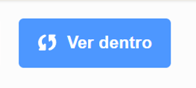
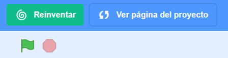

Hay muchos videojuegos que se pueden hacer en Scratch, que están inspirados casi siempre en otros que han ido apareciendo a lo largo de la historia de los videojuegos.
Antes de enfrentarte a elaborar ese videojuego tan importante para salvar nuestro planeta, te aconsejo que eches un vistazo a algunos tipos de videojuegos que se pueden hacer con Scratch.
1. Los más populares
En Scratch hay multitud de juegos interesantes. A continuación hay una selección de algunos de los juegos más usados en Scratch y que te pueden venir bien para iniciarte en la elaboración de tus primeros videojuegos.
La introducción, que explica en qué consiste, es importante leerla para comprender de qué se trata y saber cuáles son las instrucciones y el objetivo del juego.
Debajo de la introducción hay un ejemplo de cada uno de ellos.
Para aprender a elaborar tu videojuego, los pasos recomendados son los siguientes:
En primer lugar, jugar con ellos haciendo clic en la bandera verde y siguiendo sus instrucciones.
En segundo lugar, pensar cuál o cuáles pueden venir bien como modelo para elaborar el primer videojuego y conseguir nuestro reto.
Juego de ocultar y mostrar o hide and seek
El juego de ocultar y mostrar o hide and seek es uno de los más sencillos en Scratch. Consiste en eliminar o hacer desaparecer objetos haciendo clic en ellos con el ratón del ordenador. Cada vez que acertamos sumamos un punto.
Un videojuego de perseguir consiste en, como su nombre indica, que un personaje tiene que perseguir a otro personaje u objeto hasta pillarlo. Cada vez que lo toque ganará un punto.
El Pong es un videojuego clásico y muy conocido que se puede replicar fácilmente con Scratch. Consiste en hacer rebotar un objeto, normalmente una pelota, sin tocar el fondo de la pantalla. En este caso, finalizará.
El nombre "Pong" proviene del sonido que hace la bola cuando es golpeada por la paleta.
El juego de laberinto está inspirado en el juego de Maze, en el que un ratón se movía por un laberinto y buscaba quesos. Maze game es cualquier juego en el que todo el campo de juego es un laberinto. Consiste en que el jugador tiene que escapar de un enemigo, superar a un oponente o navegar por el laberinto dentro de un límite de tiempo.
La técnica de scroll es una técnica para hacer pensar al espectador o jugador que un personaje está volando o desplazándose por el escenario cuando son otros los elementos que se mueven.
Scratch te permite muchas formas de aprender a programar :
Explorar los proyectos de Scratch para buscar lo que necesitamos, jugar y observar lo que nos interese.
Analizar los elementos y el código de programación.
Reinventar el juego, utilizando lo que nos interesa y haciendo modificaciones en los elementos o en el código.
Crear el juego, teniendo en cuenta todo lo aprendido.
Visita las siguientes páginas para saber cómo se hace:
Explorar
Haciendo clic en el botón explorar puedes encontrar el videojuego que necesitas. Hay muchos y de muchos tipos. Si escribes en el buscador las palabras clave será más rápido encontrar lo que buscas.
Scratch es una comunidad que comparte sus proyectos de forma gratuita. Tú también puedes hacerlo.
Cuando encuentres el juego que te guste puedes seguir explorando para conocer en qué consiste ese juego. Te vendría bien que respondieras a estas preguntas:
¿Qué instrucciones tienen que seguir el jugador o jugadora?
¿Cuál es el objetivo del juego?
¿Qué acciones realizan los personajes y objetos?
¿Cuándo finaliza?
Analizar

Cuando haces clic en ver dentro puedes ver los elementos que se han insertado y la programación de los mismos.
De esta forma puedes analizarlo para comprender cómo se ha elaborado.
En primer lugar, analiza los elementos que se han insertado: objetos, fondos, sonidos, disfraces....
En segundo lugar, analiza el código. Para ello podemos hacernos las siguientes preguntas para saber por qué se han elegido esos bloques de programación:
¿Cuándo?
¿Qué hacer?
¿Cuántas veces? ¿Cuánto tiempo?
¿Con qué condiciones?
Reinventar

Cualquier proyecto de Scratch puedes reinventarlo o reutilizarlo para modificarlo como tú quieras.
Solo tienes que hacer clic en el botón reinventar situado en la parte superior derecha y se guardará como reinvención.
Puedes hacer cambios en los elementos o en la programación, pero no olvides en los créditos el agradecimiento al proyecto original.
Crear
Si te sientes con total seguridad para programar desde el principio un videojuego parecido al que has analizado, puedes crearlo haciendo clic en el botón crear.
Recuerda los pasos que has seguido en el análisis del videojuego, te ayudarán a crear tu propio videojuego.
Lectura facilitada
Scratch tiene muchas formas de programar.
Estas son las formas de programar:
-Explorar los proyectos de Scratch.
-Analizar los elementos y el código.
-Reinventar el juego.
-Crear el juego.
Te explico cómo se programa en Scratch:
Explorar
En el botón explorar hay muchos videojuegos.
Scratch comparte sus proyectos.
Tú puedes compartir tus proyectos.
Comprueba los videojuegos que te gustan.
Busca esta información del videojuego:
- Reglas.
- Objetivo.
- Acciones de los personajes y objetos.
- Final.
Analizar
Haz clic en ver dentro.
En ver dentro puedes ver:
-Los elementos usados.
-La programación de los elementos.
Los elementos usados pueden ser:
-Objetos.
-Fondos.
-Sonidos.
-Disfraces.
-Y muchos más.
La programación de los elementos te dice:
-Las acciones de los personajes y objetos.
-Cuando hacen las acciones.
-Las veces que hacen las acciones.
-El tiempo.
-Las condiciones.
Reinventar
Puedes usar y cambiar los proyectos de Scratch.
Pulsa el botón reinventar.
Puedes modificar los proyectos de Scratch.
Pon en créditos el agradecimiento al proyecto usado.
Crear
Tú puedes crear un videojuego.
Haz clic en el botón crear.
Sigue los pasos del análisis.
Audio
3. Analiza el código
Para analizar el código podemos hacernos las siguientes preguntas:
¿Cuándo?
¿Qué hacer?
¿Cuántas veces? ¿Cuánto tiempo?
¿Con qué condiciones?
Para cada pregunta podemos responder con un tipo de bloque. Practica en el siguiente ejercicio interactivo arrastrando los bloques debajo de la pregunta correspondiente.
4. Elige tu juego
¿Has pensado ya qué tipo de videojuego de los que te he mostrado te vendría bien para conseguir nuestro reto?
Ten en cuenta que hay videojuegos más sencillos que otros, pero no por eso son menos divertidos o interesantes. ¡Seguro que has hecho una buena elección!
En los ejercicios siguientes tienes en primer lugar una actividad interactiva para recordar en qué consiste cada uno de ellos y y a continuación una opción diferente para aprender a explorar, analizar y reinventar cada tipo de videojuego. Elige la que corresponda al que has elegido.
Sea cuál sea tu elección debes empezar siguiendo estos pasos:
En primer lugar, pulsa en ver dentro.
En segundo lugar, analiza el proyecto, siguiendo los pasos del ejercicio anterior.
Para hacerlo de manera ordenada te vamos a dejar una ficha en la que tendrás que rellenar:
Datos personales
Breve descripción del proyecto
Nombre del objeto o fondo a analizar
¿Qué hace el fondo o el objeto? Indicar los bloques que se van a usar.
¿Cuándo lo va a hacer? Bloques eventos que utilizarás.
¿Durante cuánto tiempo o cuántasveces hará la acción elegida?
Bajo qué condiciones realizará algo.
Observaciones sobre el proyecto analizado que te pueden ayudar a comprender mejor cómo funciona.
NOTA: En cada fila deberás analizar un único objeto o fondo.
Clavis dice ¡Tú puedes!
A veces hay que reflexionar sobre lo que podemos hacer. Es importante que sepas que estás preparado o preparada para afrontar gran parte de lo que viene a continuación. Principalmente porque has tenido que utilizar con éxito diferentes habilidades y recursos que ya tenías, e incluso parte de tu experiencia, para completar estos primeros ejercicios y actividades.
No digo que haya sido fácil, si no que debes ser consciente de que en cada caso has sido capaz de buscarte la vida teniendo en cuenta tus posibilidades y también tus limitaciones a la hora de dar la respuesta apropiada, pero al final lo has conseguido.
Posiblemente, necesites seguir avanzando y adquirir nuevas estrategias, pero también tienes que valorar lo que ya sabes.
OPCIÓN A: ¿En qué consisten?
Recuerda en qué consiste cada tipo de juego completando en el siguiente texto las palabras que faltan.
OPCIÓN B: juego de ocultar y mostrar o hide and seek
Si has elegido este tipo de juego, una vez que lo has analizado, llega el momento de reinventarlo.
Para ello pulsa en el botón reinventar para reutilizar el proyecto original. Te sugiero alguno cambios en el código que te pueden venir bien:
Cambia el sonido que hacen los astros al hacer clic sobre ellos.
Modifica el efecto de cambio de apariencia.
Añade un boque de movimiento para que al iniciar la partida cada objeto esté en el lugar del plano que tú quieras.
Añade un condicional para que se cumpla lo siguiente: Si el objeto es tocado con el puntero del ratón entonces, cambie de apariencia.
OPCIÓN C: Juego de perseguir
Si has elegido este tipo de juego, una vez que lo has analizado, llega el momento de reinventarlo.
Para ello pulsa en el botón reinventar para reutilizar el proyecto original. Te sugiero algunos cambios en el código que te pueden venir bien:
Añade un disfraz para el personaje principal para que al tocar la pelota se produzca un cambio más grande en su apariencia o emita un mensaje.
Inserta un objeto más que se mueva aleatoriamente y, si toca un borde, rebote.
Añade un código para que al tocar ese segundo objeto, el marcador reste un punto y cambie de fondo.
Añade un código al fondo 1 para que al iniciar el juego se inicie una música que dure todo el juego.
OPCIÓN D: Juego de pong
Si has elegido este tipo de juego, una vez que lo has analizado, llega el momento de reinventarlo.
Para ello pulsa en el botón reinventar para reutilizar el proyecto original. Te sugiero alguno cambios en el código que te pueden venir bien:
Cambia los objetos principales, la paleta y la pelota por otros que te puedan venir bien para tu proyecto. Piensa que se trata de que cualquier objeto haga rebotar a otro.
Cambia el condicional que hace sumar puntos, pon otra condición.
Cambia el condicional que hace restar vidas.
Modifica el mensaje que indica que ha finalizado la partida.
OPCIÓN E: Juego de laberinto
Si has elegido este tipo de juego, una vez que lo has analizado, llega el momento de reinventarlo.
Para ello pulsa en el botón reinventar para reutilizar el proyecto original. Te sugiero algunos cambios en el código que te pueden venir bien:
Dibuja otro laberinto, a partir de figuras geométricas como en el modelo.
Dibuja otro objeto o personaje principal con el editor gráfico de Scratch.
Añade otro objeto que sea un enemigo.
Agrega un código para este personaje en el que haya un condicional de manera que si colisiona con el personaje principal suceda algo (cambio de apariencia, de posición...)
¿Te atreves también a programar un marcador de puntos o de vidas? Inténtalo, será más emocionante.
OPCIÓN F: Juego de lanzar y saltar
Si has elegido este tipo de juego, una vez que lo has analizado, llega el momento de reinventarlo.
Para ello pulsa en el botón reinventar para reutilizar el proyecto original. Te sugiero algunos cambios en el código que te pueden venir bien:
Incluye algún bloque más de movimiento para que el gato y el mago avancen además de saltar.
Agrega un código para estos personajes emitan un mensaje o se escuche un sonido impactante si colisionan.
Dibuja otro objeto o personaje principal con el editor gráfico de Scratch, por ejemplo un objeto que esté volando y haya que eliminarlo pulsando otra tecla.
A este juego le falta un marcador de puntos, vidas o recompensas, ¿verdad? Crea una variable para ello y programa para que se ganen puntos, se resten vidas o se ganen recompensas cuando se produzca algo.
OPCIÓN G: Juego con scroll
Si has elegido este tipo de juego, una vez que lo has analizado, llega el momento de reinventarlo.
Para ello pulsa en el botón reinventar para reutilizar el proyecto original. Te sugiero alguno cambios en el código que te pueden venir bien:
En este juego lo más novedoso es la técnica de scroll. ¿Te atreves a hacerlo tú mismo con otros objetos y fondos? Cambia los edificios por otros objetos y el gato por otro personaje. Podrías hacerlo con el editor gráfico para que sea más personalizado..
Inserta otros objetos y personajes secundarios que haya que capturar o eliminar con alguna tecla.
¿Serás capar de programar otro contador para restar vidas o par pasar de nivel? Inténtalo, será más divertido.
Diseñando tu videojuego
Una vez que has reinventado tu videojuego y realizado todas las indicaciones que se pedían en la opción que has elegido, vas a poner en práctica las ideas que has aprendido en el ejercicio 3. Analiza el código. Este ejercicio de análisiste ayudará a hacer un buen diseño final, el mejor videojuego posible para que el villano no se salga con sus horribles intenciones.
Para hacerlo con éxito vas completar la ficha que aparece abajo trabajando en pareja, incluso puedes pedir la ayuda de tu maestro o maestra si fuera necesario.
1º) Elige con tu compañero o compañera por cuál de los dos videojuegos comenzar.
2º) Completaréis la ficha para ese videojuego.
2º) Ahora tendréis que realizar la ficha para el otro videojuego del compañero o compañera.
Estos son los elementos que tienes que rellenar:
Datos personales.
Breve descripción del proyecto.
Nombre del objeto o fondo a analizar.
¿Qué quieres que haga el fondo o el objeto? Indicar los bloques que se van a usar. Ejemplos: mover ( ), Iniciar sonido ( ), Ir a x ( ) e y ( ) , enviar mensaje..., etc.
¿Cuándo quieres que lo haga? Qué bloques eventos necesitas utilizar. Ejemplos: Al hacer clic en la bandera verde, Al hacer clic en el objeto, Al recibir mensaje..., etc.
¿Durante cuánto tiempo o cuántas veces hará lo que quieres que haga? Elige los bucles a usar si fuera necesario, los bloques esperar (segundos)... Por ejemplo: Por siempre..., Repetir ( ) veces, etc.
Bajo qué condiciones realizará algo. Elige los tipos de condiciones si el objeto está sujeto a alguna condición. Ejemplos: si...posición en x > 100, entonces...
Observaciones sobre el proyecto analizado que te pueden ayudar a comprender mejor cómo funciona.
NOTA: En cada fila deberás analizar un único objeto o fondo.
Puedes descargar la ficha en formato PDF imprimible en este enlace. También puedes descargarla en formato .odt de texto editable en este enlace.
En ambos casos deberás guardar la ficha en una carpeta conocida para poder recuperarla en cualquier momento.
Lectura facilitada
- Rellenarás una ficha para hacer el mejor videojuego.
- Rellenarás ficha enpareja.
- En la ficha recogerás las acciones de los objetos y fondos de tu videojuego.
- La ficha tiene varios apartados:
Datos personales.
Descripción del videojuego.
¿Qué quieres que haga tu objeto o fondo?
¿Cuándo quieres que tu objeto o fondo haga algo?
¿Cuántas veces que tu objeto o fondo haga algo?
¿Con qué condiciones quieres que tu objeto o fondo haga algo?
Observaciones de tu videojuego.
- Puedes descargar la ficha en formato PDF para imprimir en este enlace.
- Puedes descargar la ficha en formato .odt para escribir en ella en este enlace.
- Recuerda guardar la ficha.
- Guarda la ficha en una carpeta conocida.
- Así recuperarás la ficha cuando la necesites.
Audio
5. Reviso lo que aprendo
Reflexiona un momento sobre todo lo que has aprendido hasta llegar aquí y completa el PASO 3 (Reviso lo aprendido) de tu Diario de aprendizaje. Recuerda:
Pregunta a tu profesor o profesora si lo vas a rellenar en papel o en el ordenador.
Si lo rellenas en el ordenador, no te olvides de guardarlo en una carpeta que más tarde puedas localizar.
¡Ánimo, que lo harás genial!
Kardia dice ¿Quieres probar con otros tipos de juegos?
Si los juegos que te ha presentado Rétor no te han convencido puedes explorar en Scratch otros. Tienes una pestaña solamente de juegos
 Hay muchos videojuegos que se pueden hacer en Scratch, que están inspirados casi siempre en otros que han ido apareciendo a lo largo de la historia de los videojuegos.
Hay muchos videojuegos que se pueden hacer en Scratch, que están inspirados casi siempre en otros que han ido apareciendo a lo largo de la historia de los videojuegos.